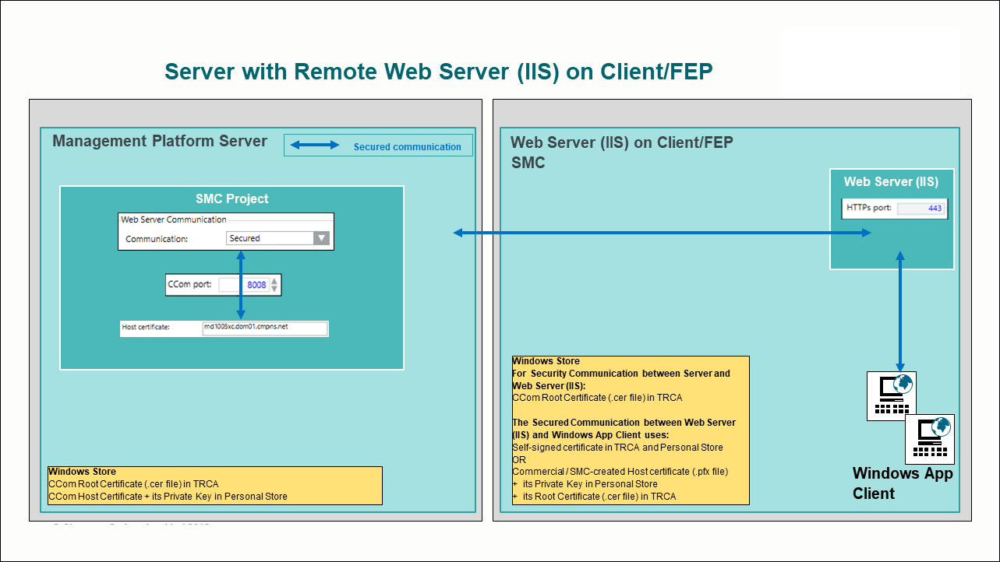

Server with Remote Web Server (IIS) on Client/FEP
When the web server (IIS) is installed on a separate computer, it is called as remote web server (IIS). A remote web server (IIS) hosts web sites and web applications.
To simplify the web site/web application, it is recommended that to install setup type – Client/FEP on the web server (IIS) and work with websites and web applications using SMC that gets installed.
You must secure the communication between the Desigo CC Server and the remote web server (IIS) hosted on Client/FEP station. It is recommended that you secure the communication using the self-signed certificate.
You can also browse the web application URL and work with the Windows App client on a remote machine other than the web server (IIS). For this you must install the website/web application certificate in the appropriate Windows certificate store on that machine.

The web application user on this remote web server (IIS) must have access rights on the shared project folder on the Server. The communication between the web server (IIS) and Windows App client is always secured (using the web application certificate).
For working with Windows App Client in distribution environment, in addition to the shared project folder on the Server linked to the web application, the web application user must have access rights on all the shared project folders of the systems (projects) in the distribution with system (project) linked to the web application.
If your company’s IT department requires the web server to be installed in a separate controlled environment, or it prefers not to use the resources of the system server for IIS tasks, you can also configure the web server on separate, dedicated computer and work with Windows App clients. To work with a website/web application management on a remote web server (IIS), see Website and Web Application Management on a Remote Web Server (IIS).
To work with Server with a remote web server (IIS) in a DMZ (demilitarized zone), see Setting up a Server and a Remote Web Server (IIS) in a DMZ Network.